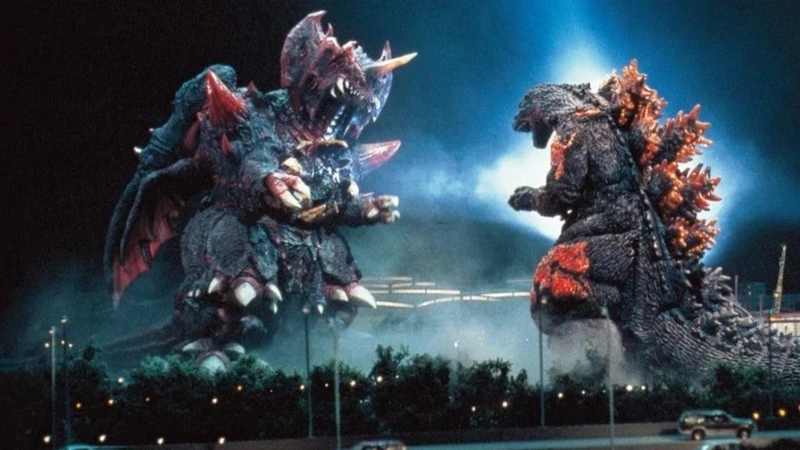
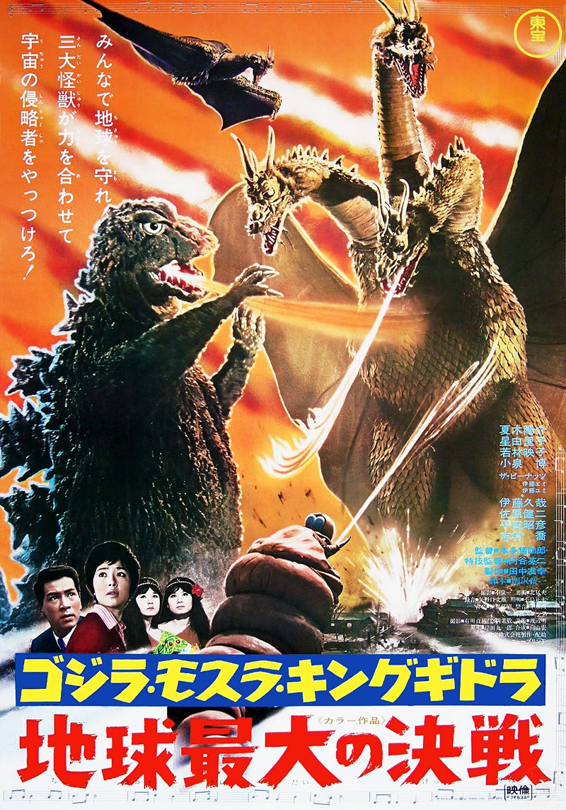

1954, The US army has set up shop in the Marshell Islands testing out hydrogen bomb, specify on Bikini Atoll. During this time there was a boating ship from Japan called Lucky Dragon 5. The ship was unaware of the testing and was affected by the bomb due to the fall out, and only once person died the radio operated. The rest of the crew was able to recover, however Japan was very unhappy with America they protested any nuclear weapons. This then would inspire the creation Godzilla as his the look of Godzilla was inspried of the surviors. two other factos that played into the creation of Godzilla was at the time the movie dirtector was Ishiro Handa was trying to film a movie in indonias but was unable as indonisa was not happy with japan. so he was sent back home while on the flight home he looked out of the plane to see the sea and thought to himself what if a monster where to come out of the water. During that time, he was used to talking about nuclear weapons. But over his 70 years of being created they have used him in many ways, going from commentary on politics and the state of the world, to a childish hero and, even just a monster that fights others for no reason. During his time, he spawned 5 different eras.
The Start
While his plans where being made with Toho stuido they started to work on Godzilla original wanting to use stop motion to bring the monster to life. the lead effects directer told them that he couldn"t deliver what they wanted in such a short time as he stated to get all the shots of the monster it would take seven years. so they went with suitmation to bring the monster to life with a small scale version of Japan. This style of effects would bring its own sets of problems as the first suit that they would end up making was weighted at 200 pounds and would then have to make another version of the suit for the actor. they had two actors for the first film and animatronic acting as Godzilla however the first actor wouldn't stay with the time for long as he fainted and was unable to put the sutie back on. The second actor would also then face the same problems as by the time they ended shoting for the film the actor had lost 13 pounds due to how much work was need to be in the suite of Godzilla.
The Second Coming
After the major succes of the first film the studio Toho some what wanted to push the franshice to make a seond film, However this second film was less serouse as the first film as they had Godzilla turn into a hero that would fight a gaitnt another monster. This would then chagne the directions of he films as they started to be looked as a monster vs monster movie then what the first film was. This would then lead Godzilla to be more a hero then a villain and then would change on the film and the director that would be making the film.
Showa (1954 – 1975)
- Godzilla (1954)
- Godzilla Raids Again (1955)
- King Kong vs. Godzilla (1962)
- Mothra vs. Godzilla (1964)
- Ghidorah, the Three-Headed Monster (1964)
- Invasion of Astro-Monster (1965)
- Ebirah, Horror of the Deep (1966)
- Son of Godzilla (1967)
- Destroy All Monsters (1968)
- All Monsters Attack (1969)
- Godzilla vs. Hedorah (1971)
- Godzilla vs. Gigan (1972)
- Godzilla vs. Megalon (1973)
- Godzilla vs. Mechagodzilla (1974)
- Terror of Mechagodzilla (1975)
Heisei (1984 - 1995)
- Return of Godzilla (1984)
- Godzilla vs. Biollante (1989)
- Godzilla vs. King Ghidorah (1991)
- Godzilla vs. Mothra: The Battle for Earth (1992)
- Godzilla vs. Mechagodzilla II (1993)
- Godzilla vs. SpaceGodzilla (1994)
- Godzilla vs. Destoroyah (1995)
Millennium (1999 – 2004)
- 2000: Millennium (1999)
- Godzilla vs. Megaguirus (2000)
- Godzilla, Mothra and King Ghidorah: Giant Monsters All-Out Attack (2001)
- Godzilla Against Mechagodzilla (2002)
- Godzilla: Tokyo S.O.S. (2003)
- Godzilla: Final Wars (2004)
Reiwa era (2016 – present)
- Shin Godzilla
- Singular point Godzilla
- Godzilla planet of the monsters
- Godzilla city on the bleeding edge of battle
- Godzilla world eater
The monsterveres (2014 – present)
- Godzilla (2014)
- Kong: Skull Island (2017)
- Godzilla: King of the Monsters (2019)
- Godzilla vs. Kong (2021)
- minus one? (2023)
Showa era of movies
This era started with the idea of horror but as the movie was going on the tone was slowly shifting, making Godzilla into a hero and more child friendly as many funny things came out of this period of Godzilla. Godzilla would then take a nine-year break coming back for its 30th anniversary. Starting the second era of Godzilla
The hesies era
For this era they tried to make a reboot to the movies making the first movie is the only one that had happen in the story line of the film. However, in this he would stay as an antihero and the movies had more focused on the themes of environmental devastation and scientific advancement, along with that they even gave a background story the Godzilla making him into a dinosaur that was still alive and was nucked turning into the monster people know him as he is now. Then Godzilla would stop again for another four years before making a comeback to the screen.
The millennium era
It would again reboot the whole franchise this time only keeping a few stories to be its new cannon and would build on top of them and they would even ignore each other’s films in this time making It seem like they are different stories. This era would close with a movie being made to celebrate 50 years of Godzilla and would have toho give the rights to ledged to make another film. This would then complicate things as they now have several Godzilla properties running wild as toho would also give the right to Netflix to make anime/ animated movies. This would split to two eras of timelines of the movie the monsterveres of legendry and reiwa era
The legendry movie
throws out everything Godzilla and they completely cleaned slate of the Ip of Godzilla as they redo his story as they were intruding their version of Godzilla to America. Keeping Godzilla as antihero and his origin changed to him being an ancient monster. These films would now feel more action packed and block buster as they would get bigger budgets to make the films. During this happens in America in Japan another film was being made shin. Released years after the American Godzilla, this time around everything was different as it seems like a return the roots of the Godzilla or at the idea. As this film was inspired by another disaster that Japan faced 2011. As it was showing how Japanese official would have to go into meeting back-to-back to get anything done. After these films the other Netflix anime would join this era making it more to the original film making Godzilla into an unstoppable force. My thoughts on this are interesting that we have a contrast between the different Godzilla now showing both sides of what he is doing both as hero and villain.
Top 5 in my opinion
.jpeg)
shin Godzilla
This movie was released in 2016 and was a different take on Godzilla as they had him evolving throughout the film. This felt like a return to form where Godzilla was again viewed as allegory for a disaster that happened in Japan.

godzilla minus one
Just last year this movie was released to the public and it did a great job as it was the retelling of the original movie and changing a few things in the film. It would take the same topics of the first one as it was a commentary on how nuclear weapons are dangerous. While change the human side so it would also talk about how the government of Japan was clause in pass times and that it should be better.

final wars
was a movie that was pure dumb fun, it was also the movie that was made for Godzilla’s 50 birthday. As it would take some pieces from pass movies and put it in. as they would have Godzilla kill most of his monsters he had face up to this point. The movie was a mixed bag as some liked it and others did not splitting the fandom slightly.
godzilla vs destoroyah
This one was used to end an era as this was made to be the movie where Godzilla dies Toho wanted this movie to be important as this would end the movie giving Godzilla a rest of ten years as they handed the movie right to Hollywood. To kill Godzilla in this movie they end up using what killed him the first time make a monster out of the bomb that killed in his first outing. Another element that I liked from this movie was how they made Godzilla into a melting down nuclear reactor.
Ghidorah, the Three-Headed Monster
This was the first appearance of Ghidorah, the most noted enemy that Godzilla would face as he became a fan favorite coming back for every era of Godzilla. And every time they brought him to the screen you can feel that he is a real threat to Godzilla.
Monster list
- Godzilla
- Mothra
- godzillasaurous
- mechagodzilla
- rodan
- biollante
- gigan
- jet jaguar
- anguirus
- hedorah
- space godzilla
- king ghidorah
- ghidorah
- monster x
- evirah
- lamacuras
- megalon
- titanosaurus
- gabara
- caesar
- varan
- kumonga
- manda
- battara
- gorosaurus
- baragan
- orga
- moguera
- megaguirus